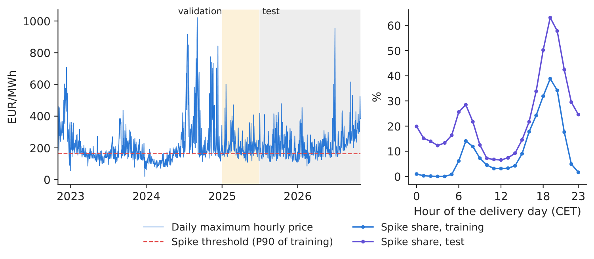
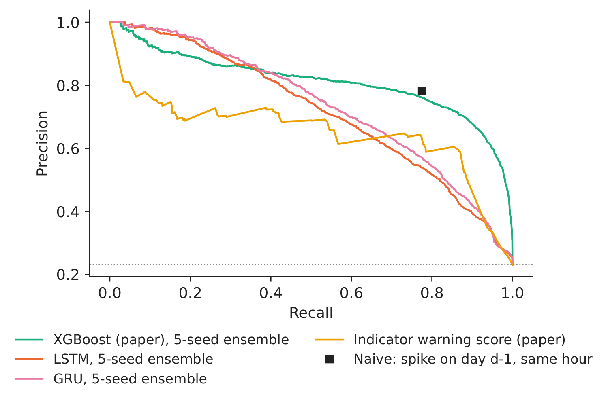
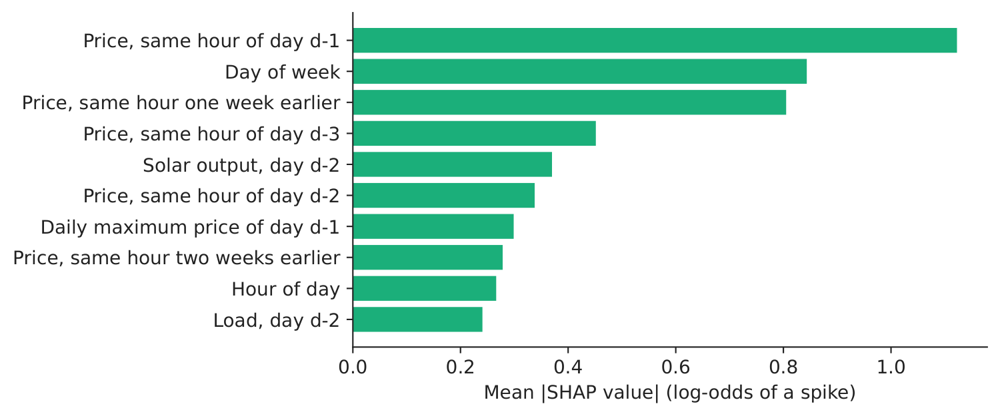
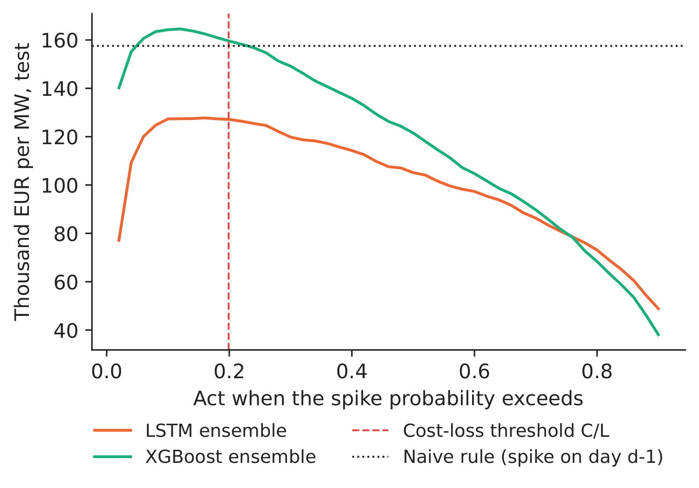
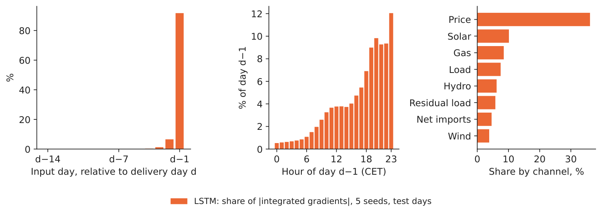

Case study 2 · Lecture 5
Recurrent networks for an explainable price-spike early warning
Prof. dr. Daniel Traian PELE
Bucharest University of Economic Studies, Department of Statistics and Econometrics
Romanian Academy, Institute for Economic Forecasting
The paper
Andrei, A.-V., Pele, D.-T., Cramer, A.-A., Amza, A. & Diaconu, D. (2026). Explainable AI-based early warning system for electricity price spikes: Evidence from the Romanian market. Proceedings of the International Conference on Business Excellence, 20(1), 4820–4836. doi:10.2478/picbe-2026-0352
The business question
An industrial consumer in Romania (a steel mill, a cement plant, a data centre) can move part of its load out of an hour if it is warned a day in advance; a battery operator can keep its energy for the evening. Every morning, before the day-ahead auction closes at noon, the energy manager asks: will tomorrow have price spikes, in which hours, and why? The data team proposes a recurrent neural network that “reads” the last two weeks of the market hour by hour, like an experienced trader. The manager must decide whether the network is worth it compared with the gradient-boosted trees already used in research, and whether its alarms can be explained to the board before anyone acts on them.
What the paper did
Question. Can explainable artificial intelligence (XAI) identify the drivers of price spikes in the Romanian day-ahead market; is the residual load forecast a primary predictor; and can an operational early-warning system be built from interpretable balance indicators (p. 4821)?
Data. 5,000 consecutive hours of the Romanian day-ahead market, March–September 2024, with 70 engineered features: generation, load and their day-ahead forecasts from the European Network of Transmission System Operators for Electricity (ENTSO-E), fuel and carbon prices, temperatures; a chronological 80/10/10 split that prevents data leakage (p. 4824–4826).
Method. Gradient boosting (XGBoost, eXtreme Gradient Boosting) and Random Forest models, explained globally with SHAP (SHapley Additive exPlanations) and locally with LIME (Local Interpretable Model-agnostic Explanations); an early-warning score that combines indicator thresholds weighted by their validation F1-score, with the alert threshold \(W^*=0.477\) chosen on the validation set; a high-price event is a price above the 90th percentile, 149.99 EUR/MWh (p. 4827, 4832).
Main findings of the paper.
- The best model explains 67.6 % of the price variance on the test set (\(R^2=0.676\), mean absolute error 24.58 EUR/MWh) (p. 4828).
- The two most influential features are the previous hour's price (mean \(|\)SHAP\(|\) = 14.30) and the residual load forecast (10.13) (Table 5, p. 4830–4831).
- The warning system reaches precision 0.470, recall 0.722 and F1 0.569 on the test set (Table 7, p. 4832); the residual-load indicator alone has the highest validation F1, 0.792 (p. 4832).
- Missing a spike is far more costly than responding to a false alarm, so the system favours recall (p. 4832); interpretable balance signals “retain their directional value” and complement the price forecasts (p. 4834).
Related work of our group: Andrei, Pele & Cramer (2026), Multi-horizon explainability in energy price forecasting, PICBE (Proceedings of the International Conference on Business Excellence) 20(1), 104–117, doi:10.2478/picbe-2026-0014: on Romanian hourly data 2018–2024, short-term features (6–24 hours) carry 41 % of the horizon-attributed SHAP contribution and price momentum becomes 4.25 times more important in high-price regimes (abstract) — the question of how far back the market's memory reaches, which our recurrent network answers with integrated gradients.
The method, step by step
Intuition first
Spikes happen when the system is tight, and tightness builds over days: an expensive evening yesterday, a week of weak wind, low hydro. Gradient-boosted trees see the past only through features someone chose (“price 24 hours ago”, “price one week ago”). A recurrent network reads the raw hourly history in order and keeps a memory of what it has seen, so it can discover such patterns itself. To trust it, we ask which hours of the past move its alarm: integrated gradients split the network's output into contributions of every input hour, as SHAP does for the trees.
A spike in hour \(h\) of delivery day \(d\) is \(S_{d,h}=\mathbf{1}\{p_{d,h}>\theta\}\), with \(\theta\) the 90th percentile of training prices. Bids for day \(d\) close at 12:00 CET (Central European Time) on day \(d-1\): prices are known up to day \(d-1\), load and generation up to day \(d-2\).
Paper's model. XGBoost estimates \(\hat\pi_{d,h}=\sigma\big(\sum_{k=1}^{K}f_k(\mathbf x_{d,h})\big)\), a sum of \(K\) regression trees \(f_k\) passed through the logistic function \(\sigma(z)=1/(1+e^{-z})\); SHAP writes each log-odds prediction as \(\phi_0+\sum_j\phi_{j}\), where \(\phi_j\) is the Shapley value of feature \(j\). The indicator score is \(W_{d,h}=\sum_m w_m\mathbf{1}\{x_{m,d,h}\ge\theta_m\}\), with weights \(w_m\propto F1_m\); an alert is raised when \(W_{d,h}\ge W^*\).
Recurrent network (Lecture 5). The input of day \(d\) is the sequence \(\mathbf u_1,\dots,\mathbf u_{T}\) of the \(T=336\) hours of days \(d-14,\dots,d-1\); \(\mathbf u_t\) holds the standardised price of hour \(t\), the load, solar, wind, residual load, hydro, gas and net imports of the same hour one day earlier, and the hour of day as \((\sin,\cos)\). A long short-term memory (LSTM) cell updates a memory \(\mathbf c_t\) and a state \(\mathbf h_t\): \(\mathbf f_t=\sigma(\mathbf W_f[\mathbf h_{t-1},\mathbf u_t]+\mathbf b_f)\), \(\mathbf i_t=\sigma(\mathbf W_i[\mathbf h_{t-1},\mathbf u_t]+\mathbf b_i)\), \(\mathbf o_t=\sigma(\mathbf W_o[\mathbf h_{t-1},\mathbf u_t]+\mathbf b_o)\), \(\mathbf c_t=\mathbf f_t\odot\mathbf c_{t-1}+\mathbf i_t\odot\tanh(\mathbf W_c[\mathbf h_{t-1},\mathbf u_t]+\mathbf b_c)\), \(\mathbf h_t=\mathbf o_t\odot\tanh(\mathbf c_t)\), where \(\mathbf f_t,\mathbf i_t,\mathbf o_t\) are the forget, input and output gates and \(\odot\) is the element-wise product; the gated recurrent unit (GRU) is a lighter variant with two gates. The final state \(\mathbf h_T\) (48 units), joined with the day of week and month \(\mathbf s_d\), goes through a small dense layer to 24 logits \(z_{d,h}\), one per delivery hour, and \(\hat\pi_{d,h}=\sigma(z_{d,h})\). The weights minimise the binary cross-entropy \(\mathcal L=-\frac1N\sum_{d,h}\big[S_{d,h}\log\hat\pi_{d,h}+(1-S_{d,h})\log(1-\hat\pi_{d,h})\big]\) with AdamW, early stopping on the validation loss, five seeds.
Explanation over time (Lecture 11). For an input \(\mathbf u\) and the reference \(\mathbf u'=\mathbf 0\) (the training mean of every channel), the integrated gradient of input \(j\) (one hour, one channel) is \(\mathrm{IG}_j=(u_j-u'_j)\int_0^1\frac{\partial F(\mathbf u'+\alpha(\mathbf u-\mathbf u'))}{\partial u_j}\,d\alpha\), with \(F=\sum_h z_{d,h}\) the day's total spike score; the IG sum to \(F(\mathbf u)-F(\mathbf u')\), the same “completeness” property as SHAP.
Quality and decision. Precision \(=TP/(TP+FP)\), recall \(=TP/(TP+FN)\), \(F1\) their harmonic mean, with \(TP\), \(FP\), \(FN\) the true positives, false positives and false negatives; PR-AUC is the area under the precision–recall curve (a random rule scores the spike share); AUC is the area under the receiver operating characteristic curve. If acting costs \(C\) per MWh and an unhedged spike costs \(L\) per MWh, act whenever \(\hat\pi_{d,h}>C/L\).
In practice
Compare the network with the paper's trees and with a naive rule on the same hours, over several seeds, before paying for complexity; ask for an explanation over time for every alarm; set the action threshold from your own costs (\(C/L\)).
Replicate it yourself
Notebook C2_notebook_EN.ipynb: hourly Romanian day-ahead prices, load and generation by source (energy-charts.info), on a grid of CET delivery days. Training 2023–2024 (731 days), validation January–June 2025, test July 2025 – October 2026 (488 days, 11,710 hours scored by every model).
Spike threshold 163.43 EUR/MWh (P90 of training; paper: 149.99). Spike share: 10.0 % in training, 14.2 % in validation, 23.1 % in the test period.
Classroom implementation: our data contain no day-ahead forecasts of load, solar and wind, so all models use the realised values of day \(d-2\), the last metered day at gate closure; no weather or fuel prices; about 20 features instead of 70; a longer sample with a different market regime. The LSTM and GRU networks (48 units, 14-day window) are the course's addition to the paper.

Figure 1. Daily maximum price and the spike threshold (left); share of spike hours by hour of day, training and test (right).
Source: energy-charts.info; our computation, November 2022 – October 2026.
Table 1. Early warning on the test period (July 2025 – October 2026), alert thresholds chosen on validation by F1. s.d. = standard deviation of single runs across 5 seeds. Best value in bold.
| Early-warning rule (test period) | Precision | Recall | F1 | s.d. | PR-AUC | s.d. | AUC |
|---|---|---|---|---|---|---|---|
| XGBoost (paper), 5-seed ensemble | 0.821 | 0.524 | 0.640 | 0.019 | 0.811 | 0.006 | 0.946 |
| LSTM, 5-seed ensemble | 0.725 | 0.522 | 0.607 | 0.018 | 0.718 | 0.005 | 0.865 |
| GRU, 5-seed ensemble | 0.735 | 0.544 | 0.625 | 0.012 | 0.736 | 0.008 | 0.875 |
| Indicator warning score (paper) | 0.716 | 0.409 | 0.521 | – | 0.649 | – | 0.871 |
| Naive: spike on day d-1, same hour | 0.782 | 0.776 | 0.779 | – | 0.843 | – | 0.934 |
Source: our computation. Paper (test set, 2024): warning system precision 0.470, recall 0.722, F1 0.569 (Table 7).
What our data show. The spike regime changed: in the test period 23.1 % of hours are spikes (10.0 % in training), concentrated in the evening (hours 18–21: 53.4 % of hours in test, 30.6 % in training). With gate-closure information only, the paper's XGBoost ranks hours best (AUC 0.946, PR-AUC 0.811); its top SHAP features are Price, same hour of day d-1, Day of week and Price, same hour one week earlier — past prices dominate, as in the paper, where the previous hour's price comes first. The recurrent networks, which receive only the raw hourly history, reach PR-AUC 0.718 (LSTM; single seeds 0.705–0.718) and 0.736 (GRU; 0.722–0.742). A block bootstrap over test days gives a PR-AUC difference LSTM \(-\) XGBoost of \(-\)0.092 (95 % interval \(-\)0.114 to \(-\)0.071) and an F1 difference of \(-\)0.033 (\(-\)0.061 to \(-\)0.003): on two years of training data, the paper's engineered features beat the network. In this new regime, persistence is hard to beat: the naive rule “spike on day \(d-1\) at the same hour” has the highest F1 (0.779) and recall (0.776), which is why the paper treats recall and simple, auditable signals as central to an early-warning system.

Figure 2. Precision–recall curves on the test period.
Source: our computation; dotted line = spike share.

Figure 3. Top-10 drivers of XGBoost spike alerts (SHAP).
Source: our XGBoost classifier, seed 0; 3,000 test hours.

Figure 4. Which hours of the past drive the LSTM's alarm? Share of \(|\)integrated gradients\(|\) by input hour (left) and by channel (right).
Source: our computation; 5 LSTM seeds, all test days, 32 integration steps.
Explaining the network. The integrated gradients show a short memory: 91.8 % of the attribution falls on the last known day (\(d-1\)), 6.6 % on day \(d-2\) and 1.7 % on the twelve days before; within day \(d-1\), the evening hours 17–21 carry 40.4 %. By channel, the price carries 36.1 %, followed by Solar. The explanation also tells us why the network trails the trees: it has not learnt the weekly cycle (day \(d-7\): 0.01 %), which XGBoost receives ready-made as “price one week earlier”, its third SHAP feature. Explaining a model is how we find what it is missing.

Figure 5. Net value of acting by alert threshold, 1 MW of flexible load, test period.
Source: our computation; \(C\) = 30 EUR/MWh.
Decision number. With an action cost \(C\) = 30 EUR/MWh (an assumption) and a loss \(L\) = 150.8 EUR/MWh (mean spike minus mean non-spike price in training), the cost–loss threshold is \(C/L\) = 0.199. Acting at that threshold with 1 MW of flexible load would have saved about 159.5 thousand EUR with XGBoost and 127.3 thousand EUR with the LSTM over the test period; the naive rule saves 157.6 thousand EUR.
Discussion questions for managers
- On our data the paper's XGBoost beats the LSTM. What would have to change (more years of data, more input channels, day-ahead forecasts) before you would try the network again?
- The integrated gradients say the network looks almost only at yesterday. Is that reassuring, or does it suggest that a simpler rule would do? How would you give the network the weekly cycle?
- One network seed scores higher than another on the same data. How many runs would you ask for before approving a model, and how would you report the spread?
- What are \(C\) and \(L\) for your company? How would the alert threshold differ for a cement plant and for a battery operator?
- Spikes became daily evening events in 2025–2026. Who in the company should decide when to recalibrate the threshold and retrain the models?
Limitations of the classroom replication
(i) All models are fitted once (training 2023–2024, validation January–June 2025) and not re-estimated during the 16-month test. (ii) The day-ahead forecasts of load, solar and wind used in the paper are replaced by the realised values of day \(d-2\); no weather or fuel prices. (iii) The networks are small (one recurrent layer of 48 units) and are not tuned; five seeds measure their training variability. (iv) Integrated gradients depend on the reference input (here the training mean) and explain the day's total spike score, not each hour separately. (v) The cost–loss value assumes that the flexible load can always be shifted and ignores the price impact of doing so.
Case 2 at a glance
- QuestionWill tomorrow have price spikes, why, and is a recurrent network worth it?
- DataHourly RO (Romania) prices, load and generation, 2023–Oct 2026; spike = price above P90 of training.
- MethodXGBoost + SHAP (paper); LSTM and GRU on 14 days of hourly history; integrated gradients; cost–loss rule.
- ResultPR-AUC: XGBoost 0.811, LSTM 0.718; 91.8 % of the network's attribution on the last known day, none on the weekly cycle.
- DecisionKeep the paper's trees and a persistence benchmark; act when spike probability \(> C/L\) (0.199).

Source: our LSTM networks (5 seeds) on energy-charts.info data; integrated gradients on the test period, July 2025 – October 2026.
Abbreviations
| AUC | area under the ROC curve, ROC = receiver operating characteristic |
|---|---|
| CET | Central European Time |
| ENTSO-E | European Network of Transmission System Operators for Electricity |
| GRU | Gated Recurrent Unit |
| LIME | Local Interpretable Model-agnostic Explanations |
| LSTM | Long Short-Term Memory |
| PICBE | Proceedings of the International Conference on Business Excellence |
| PR-AUC | area under the precision–recall curve |
| RO | Romania |
| ROC | receiver operating characteristic |
| SHAP | SHapley Additive exPlanations |
| XAI | explainable artificial intelligence |
The text, numbers, charts and tables of this page are those of the case brief; every number is computed by the case notebook on the course data.